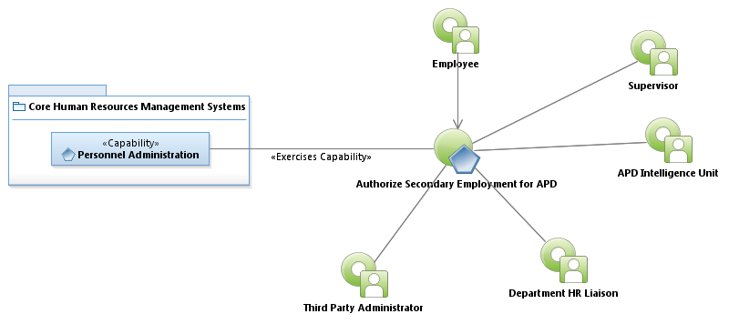
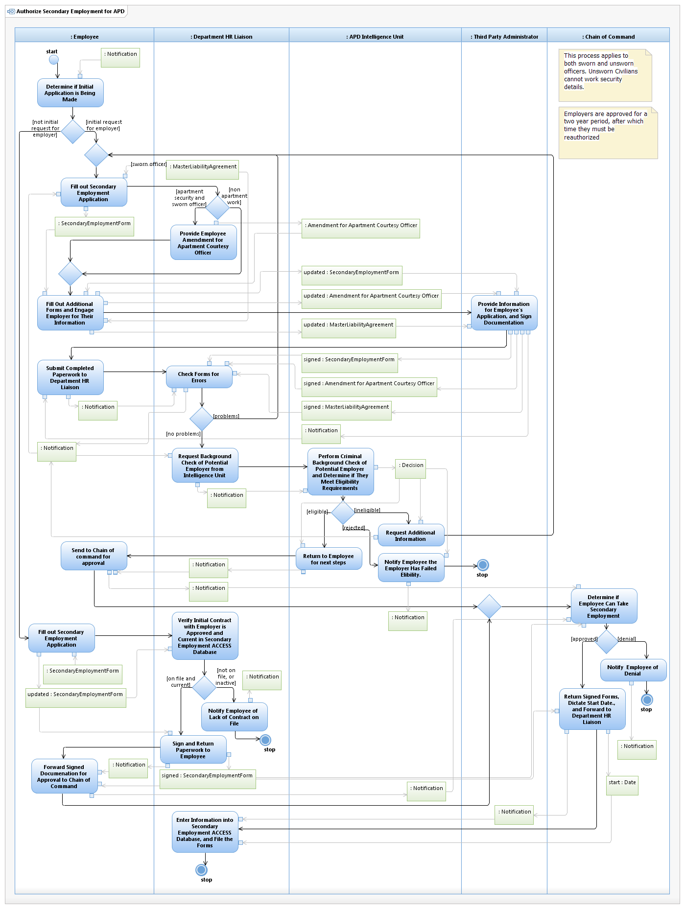

Use Case Model: Authorize Secondary Employment for APD
Architect: Aaron Brown, IT Enterprise Architect Senior
Date Last Modified: 4/09/2013
User Review: Gregg Olson, Leticia Paredes, Janice Ledesma
Date: 4/09/2013
An APD employee is interested in taking on additional work with another employer. Employers are investigated by the APD Intelligence unit and the Chain of Command makes a decision as to whether to allow the officer the second position. The APD HR Liaison maintains a database of all employers that have been checked. A successful authorization of an employer lasts for two years, after which time they must be recertified.
Follow link to Role Definitions

Use Case Model: Authorize Secondary Employment for APD

Activity Model: Authorize Secondary Employment for APD